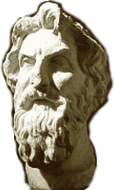
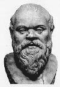
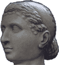
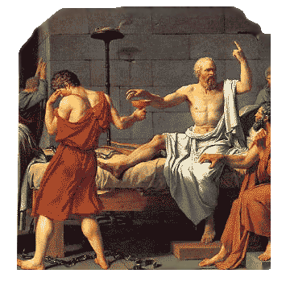

Введение в романо-германскую филологию
| лекция 1 | лекция 7 | лекция 8 |
| лекция 2 |  |
лекция 9 |
| лекция 3 | лекция 10 | |
| лекция 4 | лекция 11 | |
| лекция 5 | лекция 12 | |
| лекция 6 | лекция 13 |
ЛЕКЦИЯ 5:
Кое-что о Сократе и вокруг него
Древние греки народ был непоседливый. Ну, казалось бы, раз ты грек, то и сиди в своей Греции; так нет – соорудят корабль, сложат на него амфоры (фляги из обожжёной глины) и – айда, не в в Испанию, так в Италию, во Францию, в Северную Африку, на Южную Украину, в Турцию, в Ирландию ... но это теперь эти места так называются, а тогда всё это было одним и тем же миром, общей ойкуменой.
А чтобы выжить в том мире, надо было построить хорошо укреплённый город. Вот почему греки так почитали свои города, даже больше, чем родных родителей.
А новопростроенные города, возведённые командами кораблей отплывших из городов более древних, назывались колониями.
Основной общий признак городов-колоний в том, что все они более-менее приморские.
Однако, чтобы иметь корабли, города и прочие удобства жизни, надо знать много ремёсел и искусств: уметь амфору слепить и обжечь, знать как весла строгать, владеть искусством кораблевождения, быть опытным в военном и строительном искусствах.
Все это греки знали и умели, как и много разных других искусств и ремёсел. А вот наука у них была одна на всех и называлась она (..?..) философией. Верно.
Как и положено любой науке, был у нее свой предмет изучения, вернее даже три:
- человек;
- окружающий его мир; и
- боги, или Бог создавшие(й) и 1) и 2).
И, как всякая иная наука с полагающимя ей предметом, философия познавала, хранила и передавала знания о том, что такое человек, природа, Бог;
почему они такие;
как и из чего начались;
кто из них цель, а кто средство,
и тому подобную дребедень, без которой культурное общество вполне даже может и обойтись.
Ну, например, философ Аристарх из Самоса (320-250 г.г. до Р.Х.) за 18 столетий до Николы Коперника определил, что не солнце вокруг Земли ходит, а Земля вокруг солнца кружится; вычислил (довольно точно) во сколько раз расстояние от Земли до солнца больше расстояния от Земли до Луны...
Но скажите на милость, от такого знания удойность коров подымется ли?
А куры начнут нестись яйцами-близнецами?
Нет и нет.
Вот почему издревле считалось, что философию породила лень-матушка; и что если бы этим бездельникам, философам то есть, пришлось бы воду таскать, дрова рубить, шить-стирать-готовить, землю копать да камни ворочать, то не задавались бы они пустыми вопросами: имелся ли пупок у первого из человеков, коли его не мать родила, а Бог сотворил, или существует ли ничего, или оно не существует, раз оно ничего?
Так что культурному человеку философия, вобщем-то и ни к чему.
А вот человеку цивилизованному она уже надобиться. Почему?
В чём разница между человеком культурным и человеком цивилизованым? В чём наипервейшее различие между городом и деревней?
Об различии этом вы, наверняка, не раз слыхали, а может и сами повторяли, что «в селе все друг друга знают»...
Другое дело – в городе. В городе, чтобы тебя знали, надо уметь себя представить, подать, разрекламировать, а там, глядишь, и на хорошую должность тебя выберут или назначат...
Короче: в городе нужно, чтобы язык у тебя был хорошо подвешен.
А кто занимается подвешиванием языка? Гончар или плотник?
Нет – у них свой конкретный предмет занятия.
Но зато есть такая наука – философия – которая в своем 1) отделе (про человека) занимается вопросами не только вокруг пупка, но и такими как: почему люди назвали майку «майкой», а не скажем «подоплекой», или сколько прилагательных можно приложить к общему имени, чтобы слушатель не утерял бы за ними само это имя.
Итак, языкознание у греков было частью философии.
Спрос рождает предложение: когда есть люди желающие приобрести умение так говорить с согражданами, чтобы сограждане восхищались разговором этих людей и ставили бы их над собой, то непременно появляются обучатели, готовые натренировать в таком виде говорения и, вообще, поучить уму-разуму.
В Древней Греции (чьи города-колонии помимо Балканского полуострова находились также во Франции, в Италии ...ещё где?) такие обучатели, причем обучатели платные, назывались софистами (от слова «мудрый»).
История зафиксировала около 30 таких софистов. Они гребли деньги лопатой и вели кочевую жизнь, перезжая из города в город.
Почему?
Иногда обученый ими говорун дорывался до власти и начинал косо посматривать: не выучили бы конкурента ему на голову; иногда в другом месте платили больше или где-то им не климатило, вот и слонялись по белу свету, обучая ораторскому искусству, умению вести спор, рассуждать что такое хорошо и что такое плохо, а также разбираться в понаписанной уже на тот момент литературе: в поэмах, и пьесах на сюжеты тогдашних местных сплетен.
В свободное от обучательной работы время софисты продолжали заниматься своей философией, а потом распространяли добытые ими знания среди своих учеников.
Однако, самым излюбленным местом сбора софистов был город Афины (который и по сей день остается в Греции, но уже не Древней):
во-1-х, это был крупный город, а значит являлся хорошим рынком сбыта для их товара,
а во-2-х, управлялся он на демократической, выборной, основе (был, правда, случай, когда к власти пришли путчисты – 30 тиранов – но не надолго).
В семье, как говорится, не без урода – выискался среди софистов один, по имени Сократ, который обучать-то обучал, но деньги не требовал.
Жена его за это, безусловно, пилила, а когда друзья его спрашивали зачем он терпит и не разводится, Сократ отвечал, что Ксантиппушка для него как домашний тренер и после её пильбищ вся ругань его противников в спорах ему как соловьиные трели и как с гуся вода.
А споры эти иногда становились очень даже эмоциональными, потому что из трёх разделов философии он выбрал самый что ни на есть задевающий за живое
На ту пору в данном разделе утвердились две формулы:
- познай себя, и
- человек есть мера всех вещей.
И Сократу нравилось прилагать эту меру к самой мере – то есть познавать: что есть человек?
Для этого познания он применял такой инструмент как диалектика (не стеклянейте, не надо – в первоначальном своем значении диалектика вовсе не алгебра революции, а просто искусство вести беседу вдвоём).
Материалом для такого познания служили ему разговоры с людьми, в которых он выспрашивал: что такое хороший человек? Что такое плохой? Что хорошо для человека и что для него плохо?
И до того ловко владел он этим инструментом – диалектикой, такие на нём финты отмачивал, что кого угодно умел посадить в лужу, невзирая на чин противника и занимаемую им должность.
На основе добытого знания взял он себе за принцип – по мере возможности делай то, что хорошо, а когда такой возможности нет, то хотя бы не делай плохого.
Принимал участие в общественной жизни родного города – Афин. Ходил в рядах сограждан на войну и рубился мечом в общем строю пехоты, а при поражении кого-то там вытащил с поля битвы и подбадривал отступавших.
Принцип его—делать хорошо, и не делать плохо—приводил к конфликтам с властями всякого рода.
Так например, при демократии, когда пришла ему очередь председательствовать на общем собрании, а собрание стало требовать немедленной казни двух из сограждан, Сократ заявил, что нехорошо казнить без суда, а на крики из зала, что они, де, мера вещей и, раз уж им так хочется, то можно и без суда, он просто отказался быть председателем такого собрания и оно закрылось.
При 30 тиранах, когда те хватали и казнили кого не попадя, Сократ, при исполнении полицейских обязанностей, которые исполнял, согласно очереди его квартала в Афинах, отказался исполнить приказ об аресте очередной жертвы и даже не пошел смотреть казнь; и вообще взял за привычку допытываться у встречных-поперечных: умны ли те пастухи, которые режут стадо без разбора? На что тираны пригрозили, что в стаде скоро станет одной овечкой меньше, по имени Сократ.
Тиранов свергли, а новая демократия исполнила обещание тиранов прикончить Сократа.
А вы попробуйте войти в положение тогдашних афинских шишкарей. Будь ты хоть из самого знатного рода и даже самый первый среди богачей, но когда скажешь своё веское слово по какому-нибудь важному текущему вопросу, то афиняне тебе покивают, а между собой перемолвятся: а что на это скажет Сократ?
А кто такой этот Сократ!!..
Сын камнетёса и акушерки, у которого один единственный плащ на все случаи жизни, а всё имущество, включая и дом, в котором его поедом грызла Ксантиппа, не потянет более как на 50 мин медью.
А теперь ответьте: могли ли представители высших эшелонов афинского общества мириться с подобным положением? (..?..) Нет, не могли.
А поскольку они – шишкари, то, конечно же, располагали рычагами воздействия – кого-то подкупили, кому-то посулили, кого-то запугали и против Сократа было возбуждено уголовное дело. Он обвинялся:
- в растлении молодежи;
- в попытке введения новых богов;
то есть в деяниях подрывающих устои общества и пропаганде анти-государственной идеологии.
Насчёт молодежи – да; молокососам нравилось повсюду шляться за Сократом и слушать как он в спорах разделывает противников в пух и прах; и эти стервецы до того насобачились в его диалектике (которая была ещё не алгеброй, а умением вести беседу), что бывало папа-шишкарь сынку слово, а тот лоботряс ему два в ответ, да так перектрутит оболтус, что родной папа выглядит осёл-ослом...
А вот насчет богов...
Была у древних привычка—клясться богами. Чуть что: Клянусь Зевсом! Клянусь Аполлоном! Посейдоном! Афиной! Янусом!
Сократ же и тут отличался; постоянно приговаривал: клянусь собакой!
А когда ему делали замечание – чего это он такую тварь в божье общество затёсывает—отвечал, что у египтян, эвон, и собака тоже бог.
(У тех и впрямь, какого только зверья в богах не водилось: тут тебе и крокодил, и бык, и кошка, и змея, и... и
Вобщем, устроили над Сократом суд по всем демократическим правилам – общее собрание из 501 судьи (по 50 от каждого района плюс один для неровного счета)—и богатые, и бедные, и просто зажиточные.
Он и тут заартачился: вместо того чтоб, как водится, встать, слезу пустить (и чтоб дети его тут же хором приплакивали), и попросить прощения, он, с виртуозным применением своей долбаной диалектики, чётко и неопровержимо доказал что:
- ни один наркоман или извращенец из числа местной молодежи на уроки к нему не ходил (а ведь именно такие крутятся там, где есть возможность растлиться);
- в философии он не занимался разделами касательно природы и богов, поскольку его конек – познание человека; к тому же, по его мнению, богов уже и так развелось, как собак нерезаных и тут впору не новых вводить, а старых сокращать, чтоб остался на всех – Один.
В заключение сообщил, что хотя всю свою жизнь старался исполнять завет «познай себя», теперь, в свои 70 лет, он знает лишь одно то, что он ничего не знает...
Итак, человек, который в поединке умов любого из присутствующих 501 судьи уложит на обе лопатки, заявляет, что он – невежда...
К какому спрашивается разряду умственных недоносков остается судьям причислять себя? Как им после такого не обидеться?
С перевесом в 59 голосов Сократ был приговорён к казни через выпивание отравы.
Перед казнью он несколько дней провел в тюрьме, где ему были созданы все условия, чтобы он убежал. В камере ежедневно собирались ученики и родственники – с уговарами «рвать когти».
Но он возражал, что совершив побег он нарушит закон (приговорили-то его по суду) и тем самым подаст плохой пример для молодежи, вот и выйдет, что обвинили его правильно, хотя и авансом.
Вот так—с соблюдением всех норм законности—окончилась жизнь Сократа ровно за 399 лет до рождения Исуса Христа.
Учение же его продолжало жить в его учениках, прозванных сократиками, и в школах, открытых его учениками; школы эти тоже назывались сократиками.
В школах тех занимались философией—одним предметом на всех, но, правда, с тремя разделами.
Для обучения, сократики в своих сократиках пользовались литературными текстами, закладывая основы общей филологии и РГФ, как её составной части.